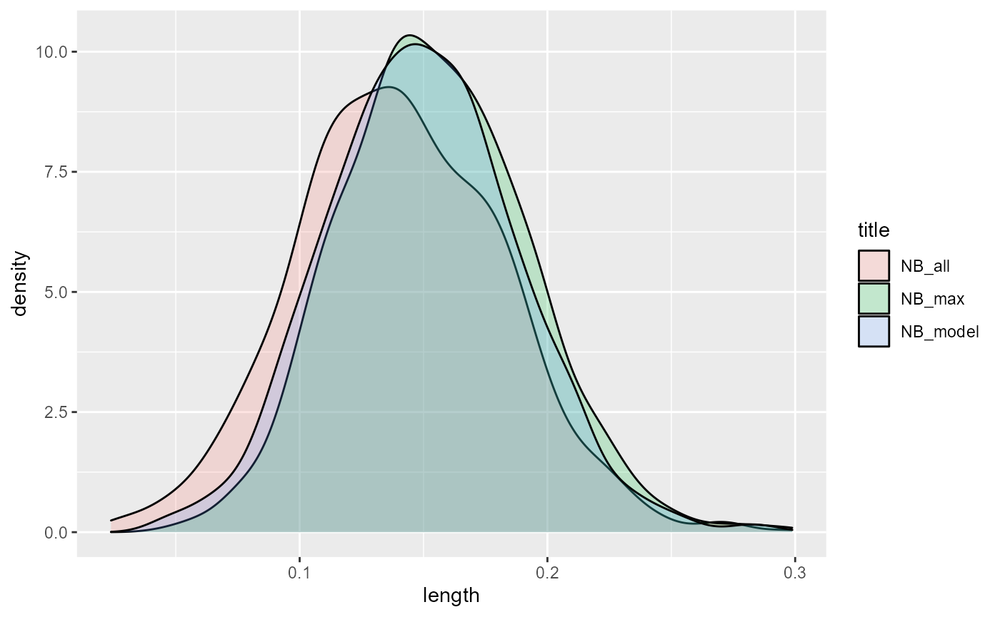
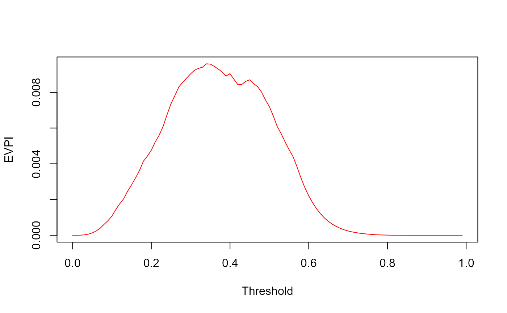
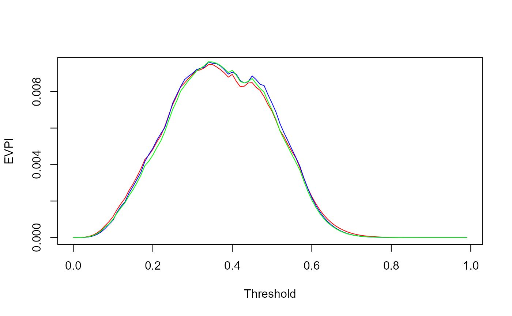

Development EVPI tutorial
Mohsen Sadatsafavi
February 06, 2022
devEVPI_tutorial.RmdIntroduction
This tutorial is a step-by-step calculation of the Expected Value of Perfect Information (EVPI) for risk prediction models.
The EVPI developed in this document is the development EVPI: it estimates the distance,
We have data of n individuals with a binary outcome (Y) and a set of predictors.
We have developed a risk prediction model for Y using these data
We know that because of the finite sample size, the regression coefficients of our model are uncertain
We are making our decision to use this model or not based on net benefit (NB) calculations, as defined in the classic paper by Vickers and Elkin (Med Decis Making. 2006;26(6):565-574. doi:10.1177/0272989X06295361).
As a result of above, we know that the NB we estimate for our model, as well as for the ‘default’ decisions of treating no one and treating all, can e incorrect, and as such we might make incorrect conclusions about if our proposed model is better than the default decisions at threshold of interest.
-
We calculate EVPI as the expected distance in net benefit (NB) between a proposed model (that we just developed using some development data). We can then judge the value of EVPI todecide
- Whether a model is goof enough and should proceed to next stage
- Whether it is not good and should be abandoned
- Whether we cannoe arrive at a conclusion and need more development sample
We progress through a simple case study
The development data
To keep things simple, we use the small and simple data set birthwt from the MASS package. These data are for the new born and were collected at Baystate Medical Center, Springfield, Mass during 1986.
Our outcome of interest is the binary variable ‘low’, taking a value of 1 if the baby’s weight is too low (<2.5Kg).
We use the following 3 predictors:
age: mother’s age in years.
lwt: mother’s weight in pounds at last menstrual period.
smoke: smoking status during pregnancy.
data('birthwt', package="MASS")The data has rows. The outcome was observed in 59 births.
Because we are working with a subset of data, we keep a clean, targetted dataset that we call dev_data (development data).
Also, the risk threshold of interest is 0.2.
dev_data <- data.frame(birthwt[,c('age','lwt','smoke')], Y=birthwt$low)
n <- dim(dev_data)[1] #n is the number of observations.
z <- 0.2 #this is the risk threshold.This is how the data looks like:
head(dev_data)## age lwt smoke Y
## 85 19 182 0 0
## 86 33 155 0 0
## 87 20 105 1 0
## 88 21 108 1 0
## 89 18 107 1 0
## 91 21 124 0 0The ‘proposed’ model
To proceed, we fit an uncomplicated logistic regression model:
And this is a summary of this proposed model:
print(model)##
## Call: glm(formula = Y ~ age + lwt + smoke, family = binomial(link = "logit"),
## data = dev_data)
##
## Coefficients:
## (Intercept) age lwt smoke
## 1.36823 -0.03899 -0.01214 0.67076
##
## Degrees of Freedom: 188 Total (i.e. Null); 185 Residual
## Null Deviance: 234.7
## Residual Deviance: 222.9 AIC: 230.9Let’s go ahead and calculate the predicted risks (π , and in R code we write them is ‘pi’) for each patients:
dev_data$pi <- predict(model,type='response')
head(dev_data)## age lwt smoke Y pi
## 85 19 182 0 0 0.1705285
## 86 33 155 0 0 0.1418425
## 87 20 105 1 0 0.4961377
## 88 21 108 1 0 0.4773007
## 89 18 107 1 0 0.5095645
## 91 21 124 0 0 0.2777118The net benefit of the proposed model
Our metric of interest is Net Benefit (NB). At risk threshold of z, it is calculated as
\(P(\text{True positive}) - P(\text{False positive})\frac{z}{1-z}\)
Which in the sample can be estimated as
\(NB(z)=\sum_{i=1}^nI(π_i>z)\{Y_i-(1-Y_i)\frac{z}{1-z}\}\)
Which translates to the following code:
## [1] 0.1574074Uncertainty in predicted risks from the proposed model
Because the sample size is finite (and in fact quite small in this example), regression coefficients are uncertain. Our model is therefore likely different from the ‘correct model’; that is, the model with correct coefficients.
Because of this discrepancy, the use of the proposed model will be sub-optimal compared with the use of the correct model. As such, making decisions about patient management based on predicted risks from the proposed model can be different from the decision based on the correct risks.
The EVPI captures the expected loss in NB because of not knowing the correct risks.
NB calculations if the correct model is known
Imagine for the moment, we know the truth: that the correct model associating our predictors of interest to the risk of the outcome if of the form
\(logit(P(Y))= 1 - 0.03899*age - 0.01*lwt + 0.5*smoke\)
Because we know the truth, we can calculate the actual risk of outcome, denoted by p, for each observation in the data set:
dev_data$p <- 1/(1+exp(-(1-0.03899*dev_data$age-0.01*dev_data$lwt+0.5*dev_data$smoke)))Now our data look like
head(dev_data)## age lwt smoke Y pi p
## 85 19 182 0 0 0.1705285 0.1735304
## 86 33 155 0 0 0.1418425 0.1374456
## 87 20 105 1 0 0.4961377 0.4182893
## 88 21 108 1 0 0.4773007 0.4016031
## 89 18 107 1 0 0.5095645 0.4324603
## 91 21 124 0 0 0.2777118 0.2575408Now that we have the correct risks, we can calculate the net benefit directly using p:
\(NB(z)=\sum_{i=1}^n I(π_i>z)(p_i-(1-p_i)\frac{z}{1-z})\)
This is very similar to the original euqation for NB, only that we have replaced Y with correct probabilities. Implementing this in R, we have
## [1] 0.1073516We similarly calculate the NB of treating all:
## [1] 0.09654724The highest NB: the NB of the correct model itself (\(NB_{max}\))
If we know the correct model, then why even using our proposed model? We can calculate the NB of the correct model
\(NB_{max}(z)= \sum_{i=1}^n I(p_i>z)(p_i-(1-p_i)\frac{z}{1-z})\)
Which is easy to calculate:
## [1] 0.1076502But we don’t know the correct model (but a Bayesian perspective helps)
The above calculations was based on the complete knowledge about the correct model. However, we do now know the correct model! How should we proceed?
Because we have the development sample, we can infer about the parameters of the correct model. This requires a Bayesian approach towards NB calculations. The uncertainty in the regression coefficients can be seen as a probability distribution around the parameters of the correct model.
Sampling from the distribution of the regression coefficients for the correct model can be done in many different ways. It can be fully Bayesian, likelihood-based, or based on bootstrapping (as discussed in the paper).
Bootstrap seems a good choice because of its flexibility. We bootstrap the development data set, and fit a new model every time. We make predictions from this model to the original data set. These predicted risks can be taken as samples from the predicted risks of the correct model.
The algorithm looks like this: 1. Obtain a bootstrap sample from the development data set. 2. Fit the model again in this sample. 3. Use this model to make predictions in the original sample. 4. Calculate the NBs of the proposed model, NB of treating all, and NB of using the correct model (as explained above). Store the results in memory 5. Repeat steps 1-4 many times.
This is how it looks in R:
#Vectors that will keep the results
NB_model <- NB_max <- NB_all <- 0
for(i in 1:1000)
{
#Bootsrapping the development sample
bs_data <- dev_data[sample(1:n, size = n, replace = T),]
#Fitting the model in this sample.
bs_model <- glm(Y ~ age + lwt + smoke, data=bs_data, family = binomial(link="logit"))
#predictions from this model in the development sample can be taken as the correct model for the moment
p <- predict(bs_model, newdata = dev_data, type='response')
#Calculations of NBs taking p as the correct risk
NB_model[i] <- mean((dev_data$pi>z)*(p - (1-p)*z/(1-z)))
NB_all[i] <- mean((p - (1-p)*z/(1-z)))
NB_max[i] <- mean((p>z)*(p - (1-p)*z/(1-z)))
}Let’s look at how these quantities are distributed:

Clearly, NB_model and NB_max have generally higher values. NB_max slightly edges out NB_model (which will become obvious when we calculate the means):
The value of knowing the truth: EVPI
Having the three quantities at hand, we can know estimate how much knowing the correct model will get us extra NB.
With current information, the best NB we can get is to pick the decision with the highest expected NB
$NB_\text{current information}=max\{\text{E}NB_{model}, \text{E}NB_{all}, 0\}$
Note that 0 is the NB of not treating anyone.
If we had access to the correct model, we would have used it instead of the proposed model. So the expected gain would be \(NB_\text{perfect information}=max\{\text{E}NB_{max}, \text{E}NB_{all}, 0\} = \text{E}NB_{max}\)
*Note that \(\text{E}NB_{max}\) is guaranteed to be more than the other quantities so the maximization is redundant.
The difference between the expected NB under perfect and current information is the Expected Value of Perfect Information:
\(EVPI=\text{E}NB_{max}-max\{\text{E}NB_{model}, \text{E}NB_{all}, 0\}\)
In R, it is just too easy to calculate EVPI based on the quantities we have calculated so far:
## [1] 0.005000959So, with knowing the truth we expect to gain 0.005001 higher expected NB compared with the proposed model at the chosen threshold of 0.2.
Putting things together: R code for EVPI calculation
The code below consolidates everything, and also does the calculations for a range of threshold:
n <- dim(dev_data)[1]
z <- (0:99)/100
n_sim <- 1000
dev_data$pi <- predict(model, type="response") #Predicted risks
#Step 2:
NB_model <- NB_all <- NB_max <- rep(0,length(z))
for(i in 1:n_sim)
{
#Step 2.1
bs_data <- dev_data[sample(1:n, n, replace = T),]
bs_model <- glm(Y ~ age + lwt + smoke, family = binomial(link="logit"), data=bs_data)
#Step 2.2
p <- predict(bs_model, newdata = dev_data, type="response") #draw from correct risks
#Step 2.3
for(j in 1:length(z))
{
NB_all[j] <- NB_all[j] + mean(p-(1-p)*(z[j]/(1-z[j])))/n_sim #NB of treating all
NB_model[j] <- NB_model[j] + mean((dev_data$pi>z[j])*(p-(1-p)*z[j]/(1-z[j])))/n_sim #NB of using the model
NB_max[j] <- NB_max[j] + mean((p>z[j])*(p-(1-p)*z[j]/(1-z[j])))/n_sim #NB of using the correct risks
}
}
#Step 4
EVPI <- NB_max-pmax(0,NB_model,NB_all)
plot(z, EVPI, xlab="Threshold", ylab="EVPI", type='l', col='red')
How to interpret EVPI?
EVPI is in the true positive scale. This is rather context-specific. We think EVPI can best be interpreted compared to the NB that the proposed model provides. To this end, we propose Incremental NB and Relative EVPI.
To proceed, we note that we have three Nb entities to compare: - NB of the best decision without any risk stratification: \(max(0,\text{E}NB_{all})\) - NB of the best decision with the proposed model: \(max(0,\text{E}NB_{all},\text{E}NB_{model})\) - NB of the best decision with the correct model: \(NB_{max}\)
So, the Incremental Benefit (ΔNB) with current information is
\(\text{E}INB_\text{Current Information}=max(0,\text{E}NB_{all},\text{E}NB_{model}) - max(0,\text{E}NB_{all})\)
Where is with perfect information it is:
\(\text{E}INB_\text{Perfect Information}=NB_{max}-max(0,\text{E}NB_{all})\)
Which can be calculated as
Our suggestion for the graphical presentation is an overlay of the two INB plots:
plot(z, INB_current, type='l', col='black', ylim=c(0,max(INB_current,INB_perfect)), xlab="Threshold", ylab="Incremental NB")
lines(z,NB_max-pmax(0,NB_all),type='l', col='red', ylim=c(0,max(INB_current,INB_perfect)))
Which nicely shows the difference between the INB curves across the thresholds. This difference is the EVPI, and this graphs shows its extent compared with the gain in NB with the proposed model.
As well, we suggest taking the ratio of the two, which we call Relative EVPI (EVPIr):
EVPIr <- INB_perfect/INB_currentHowever, a simple plot of this graph might not be very informative (especially with small samples like ours):
plot(z, EVPIr, type='l', xlab="Threshold", ylab="Relative EVPI")This is indeed a messy, uninformative graph, and the reason is obvious in the INB graph: in many instances, the INB under current information, the denominator, is 0. If INB under perfect information is 0 (like around threshold value of XXX) we will get 0/0 NaN. If INB under perfect information is non-zero, with get +∞. These have two different meanings:
An EVPIr of 0/0 means under perfect (and thus correct) information, the model is not expected to do better than the default decisions.
An EVPIr of +∞ means that while under current information the model is not expected to do better than default decisions, under perfect information it might! Thus the model is not good to go towards validation. But procuring more development sample and revising the model might be justified.
The EVPIr graph can therefore be upgraded to accomodate these. We cap it on the Y-axis at 10 (to us, an EVPIr of >10 has the same implications as an EVPIr=+∞). We also label the areas of the X-axis according to whether EVPIr is 0/0 or +∞.
So we do a little processing to identify the areas where EVPIr is 0/0 versus +∞:
max_y <- min(max(EVPIr,na.rm = T),10)
yNaN <- rep(0,length(z))
yNaN[which(is.nan(EVPIr))] <- 1
yInf <- rep(0,length(z))
yInf[which(EVPIr>10)] <- 1
w <- rep(1/length(z),length(z))
plot(z, EVPIr, type='l', col='red', ylim=c(0,max_y), xlab="Threshold", ylab="Relative EVPI")
par(new=T)
barplot(yNaN, w, border='grey', col='grey', xlim=c(0,1), ylim=c(0,max_y), xlab=NULL, ylab=NULL, space=0, axes=FALSE)
par(new=T)
barplot(yInf, w, border='black', col='black', xlim=c(0,1), ylim=c(0,max_y), xlab=NULL, ylab=NULL, space=0, axes=FALSE)
legend(0.8,9, legend=c("0/0",">10"),col=c("grey","black"), lty=c(1,1), lwd=c(10,10), border=NA)
Using the voipred package
The voipred packages encapsulates much of what we have done. Its latest experimental version can be installed via github as
devtools::install_github("resplab/voipred")Once installed…
library(voipred)At bare minimum, the voi_glmnet() function in this package requires the model as a GLM object, and the number of simulations requested
## [1] 0.004828307The voi_glm function also incorporates likelihood-based and Bayesian bootstrap calculations. We can use this opportunity yo compare the results.
res_ML <- voi_glm(n_sim=1000,glm_object=model, mc_type = "likelihood")
res_BB <- voi_glm(n_sim=1000,glm_object=model, mc_type = "Bayesian_bootstrap")
plot(res$threshold, res$EVPI, xlab="Threshold", ylab="EVPI", type='l', col='red')
lines(res$threshold, res_ML$EVPI, col='blue')
lines(res$threshold, res_BB$EVPI, col='green')